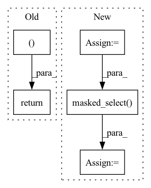

Pattern ID :14653
Before Change
pred_kpts_list.append(pred_keypoints[0, i, :2].cpu().numpy())
if y_keypoints[0, i, 2] > 0.001:
y_kpts_list.append(y_keypoints[0, i, :2].cpu().numpy())
return torch.tensor(pred_kpts_list), torch.tensor(y_kpts_list)
pred_keypoints = pred_keypoints[0,:,:2] //getting rid of the actual max value
y_keypoints = y_keypoints[0,:,:2]
return pred_keypoints, y_keypointsAfter Change
y_keypoints = y_keypoints[0]
if threshold: // TODO: convert to vectorized selection based on bool ops
num_threshold = torch.tensor(0.001, device = heatmaps_pred.device)
pred_mask = torch.gt(pred_keypoints[:, 2], num_threshold)
y_mask = torch.gt(y_keypoints[:, 2], num_threshold)
pred_keypoints = torch.masked_select( pred_keypoints, pred_mask)
y_keypoints = torch.masked_select(y_keypoints, y_mask)
// pred_kpts_list = []
// y_kpts_list = []
// for i in range(pred_keypoints.shape[1]): // pred_keypoints is shape(1, num_keypoints, 3) the last entry being (x,y, confidence)In pattern: SUPERPATTERN
Frequency: 3
Non-data size: 5
Instances Fragment ID: 48087021
Project Name: danbider/lightning-pose
Commit Name: 310e91d25cfe4e5eacac9d3b3640988879abd1dd
Time: 2021-08-02
Author: nicholasg101@gmail.com
File Name: pose_est_nets/models/heatmap_tracker.py
M Class Name: DLC
N Class Name: DLC
M Method Name: computeSubPixMax(4)
N Method Name: computeSubPixMax(4)
M Parent Class: LightningModule
N Parent Class: LightningModule
M File Name: pose_est_nets/models/heatmap_tracker.py
N File Name: pose_est_nets/models/heatmap_tracker.py
M Start Line: 157
M End Line: 170
N Start Line: 157
N End Line: 175
Before Change
l1_loss = l1_loss.mul(out_weights).masked_select(out_masks).sum()
duration_loss = (duration_loss.mul(duration_weights).masked_select(duration_masks).sum())
return l1_loss, duration_loss
After Change
out_weights /= gold_spectrograms.size(0) * gold_spectrograms.size(2)
duration_masks = make_non_pad_mask(text_lengths).to(gold_spectrograms.device)
duration_weights = (duration_masks.float() / duration_masks.sum(dim=1, keepdim=True).float())
variance_masks = duration_masks.unsqueeze(-1)
variance_weights = duration_weights.unsqueeze(-1)
pitch_loss = pitch_loss.mul(variance_weights).masked_select( variance_masks) .sum()
energy_loss = (energy_loss.mul(variance_weights).masked_select(variance_masks).sum())
// apply weight Fragment ID: 48087017
Project Name: digitalphonetics/ims-toucan
Commit Name: 116b9c3f51fb74738622ec2ce379e42f9e478498
Time: 2023-03-11
Author: lux.florian@gmail.com
File Name: TrainingInterfaces/Text_to_Spectrogram/ToucanTTS/ToucanTTSLoss.py
M Class Name: ToucanTTSLoss
N Class Name: ToucanTTSLoss
M Method Name: forward(12)
N Method Name: forward(8)
M Parent Class: torch.nn.Module
N Parent Class: torch.nn.Module
M File Name: TrainingInterfaces/Text_to_Spectrogram/ToucanTTS/ToucanTTSLoss.py
N File Name: TrainingInterfaces/Text_to_Spectrogram/ToucanTTS/ToucanTTSLoss.py
M Start Line: 50
M End Line: 53
N Start Line: 20
N End Line: 66
Before Change
setattr(interaction, "pos_len_list", pos_len_list)
setattr(interaction, "user_idx_list", user_idx_list)
return interaction, scores
def evaluate(self, eval_data, load_best_model=True, model_file=None):
if load_best_model:
After Change
pos_scores = torch.split(pos_scores, pos_len_list, dim=0)
ones_tensor = torch.ones(batch_size, dtype=torch.bool, device=self.device)
used_mask = ones_tensor.index_fill(dim=0, index=used_idx, value=0)
neg_scores = scores.masked_select( used_mask)
neg_scores = torch.split(neg_scores, neg_len_list, dim=0)
final_scores = list(itertools.chain.from_iterable(zip(pos_scores, neg_scores)))
final_scores = torch.cat(final_scores)
setattr(interaction, "pos_len_list", pos_len_list)
Fragment ID: 48087032
Project Name: rucaibox/recbole
Commit Name: efaf2d8c84961b5042c0d42e08e56a59f064f267
Time: 2020-08-05
Author: houyupeng@ruc.edu.cn
File Name: trainer/trainer.py
M Class Name: Trainer
N Class Name: Trainer
M Method Name: _full_sort_batch_eval(2)
N Method Name: _full_sort_batch_eval(2)
M Parent Class: AbstractTrainer
N Parent Class: AbstractTrainer
M File Name: trainer/trainer.py
N File Name: trainer/trainer.py
M Start Line: 186
M End Line: 212
N Start Line: 187
N End Line: 211